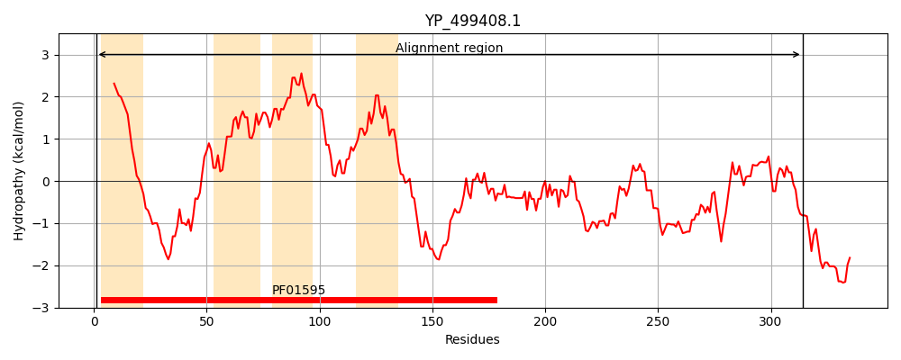
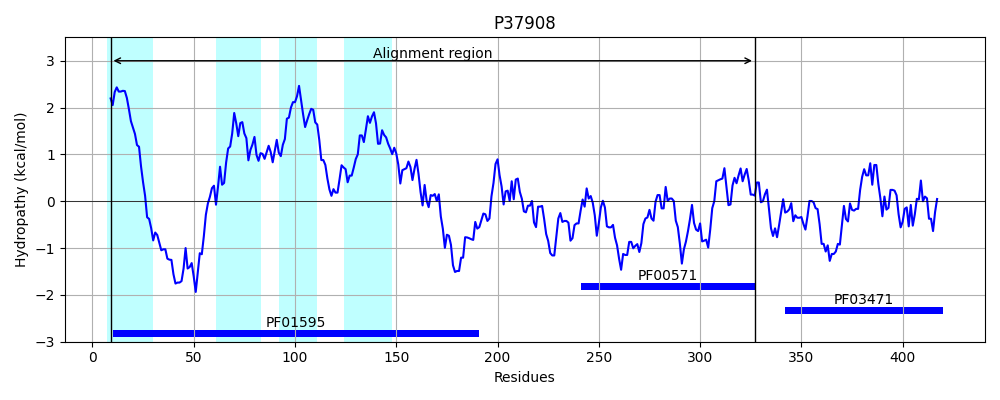
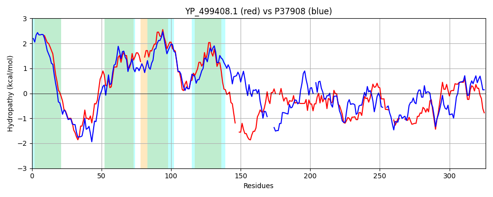

Hit Accession: P37908
Hit TCID: 1.A.112.2.5
Hit Description: gnl|BL_ORD_ID|10144 gnl|TC-DB|P37908|1.A.112.2.5 UPF0053 inner membrane protein YfjD OS=Escherichia coli (strain K12) GN=yfjD PE=1 SV=5
Mach Len: 326
e:0.000000
Query TMS Count : 4
Hit TMS Count: 4
TMS-Overlap Score: 3.800000
Predicted Substrates:None
BLAST Alignment:
Score: 372 , Bit scores: 147 bits, E-value: 7.3e-41, Alignment length: 326, Percentage identity: 30
Query: 1 MIIAIIILIFISFFFSGSETALTAANKTKFKTEADKGDKKAKGIVKLLEKPSEFITTILIGNNVANILLPTLVTIMALR--WGISVGIASAVLTVVIILISEVIPKSVAATFPDKITRLVYPIINICVIVFRPITLLLNKLTDSINR--SLSKGQPQEHQFSKEEFKTMLAIAGHE--GALNEIETSRLEGVINFENLKVKDVDTTPRINVTAFASNATYEEVYETVMNKPYTRYPVYEGDIDNIIGVFHSKYLLAW---SNKKE---NQITNYSAKPLFVNEHNKAEWVLRKMTISRKHLAIVLDEFGGTEAIVSHEDLIEELLG 314
+II +II++ IS +FSGSET + N+ + + A +G++ AK + KLL KP I+ +LIGNN+ NIL L TI+ +R V IA+ VLT V+++ +EV+PK++AA +P+K+ ++ I+ P+ LLN +T + R + SKEE +T++ HE ++ L V++ E + V D+ PR + N ++ + + + P+ R +Y +D+ I + + AW S KKE + + + FV E L K ++K + +V++E+G + +V+ ED++EE++G
Sbjct: 9 LIIILIIMVVISAYFSGSETGMMTLNRYRLRHMAKQGNRSAKRVEKLLRKPDRLISLVLIGNNLVNILASALGTIVGMRLYGDAGVAIATGVLTFVVLVFAEVLPKTIAALYPEKVAYPSSFLLAPLQILMMPLVWLLNAITRMLMRMMGIKTDIVVSGSLSKEELRTIV----HESRSQISRRNQDMLLSVLDLEKMTVDDI-MVPRSEIIGIDINDDWKSILRQLSHSPHGRIVLYRDSLDDAISMLRVRE--AWRLMSEKKEFTKETMLRAADEIYFVPEGTPLSTQLVKFQRNKKKVGLVVNEYGDIQGLVTVEDILEEIVG 327 | Protein Hydropathy Plots: |
|---|
|  |  |
Pairwise Alignment-Hydropathy Plot:
|
|---|
|  |